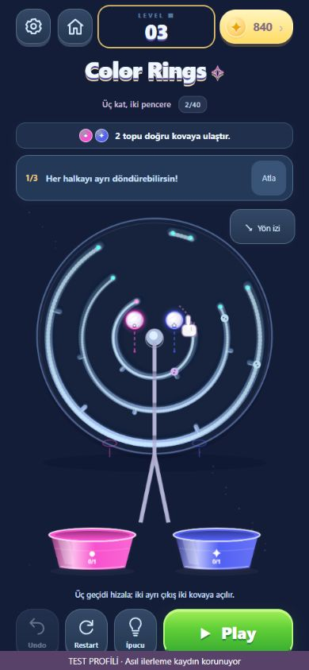
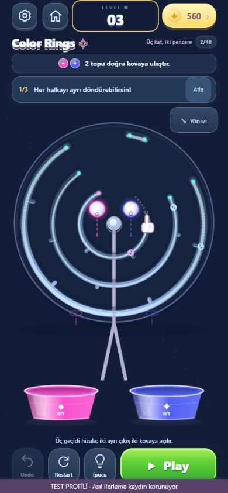

COLOR RINGS · 27 EKİM 2026Labirente daha fazla alan.
Gerçek uygulama ekranları. Aynı Klasik 3, aynı Galaxy paleti ve 390×844 viewport. Fizik koordinatları ve kayıtlar korunur.
Önce · daha dar tuval
Sonra · yaklaşık %15 büyük labirent
8 seçilmiş Ustalık düzeni geliştirildi; 5'inde anahtar ve bağlı halka birlikte çözülür. U63 tarayıcıda dört hamleyle tamamlandı. 729 test, 140 normal + 15 özel fizik çözümü doğrulandı. Global minimum hamle veya fiziksel telefonda 60 FPS iddiası yoktur.